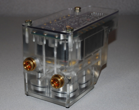
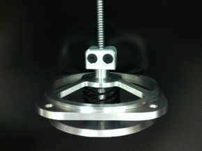

-

Active Air Suspension
An air suspension system that is capable of adjusting to varying conditions and driving styles on the fly. I designed modules for a range of applications, from performance cars to commercial vehicles.
-
OptimumK
OptimumK is a tool that lets automotive engineers quickly simulate suspension designs to learn how they will perform. I worked on the design and development of the interface and wrote some of the key algorithms.
-
Pneumatic Control Units
These units are at the heart of a number of pneumtic systems on commercial vehicles. The enclosed controller and valves make possible systems that respond to changing conditions and driver inputs.
-

Valves and Actuators
My design work includes a number of valves and pneumatically driven actuators for use in automotive applications. Achieveng the necessary motion while meeting packaging requirements has been a consistent challenge.
-

Formula SAE
Formula SAE is a student competition to design and build a small race car for an annual international competition. I designed many components, was deeply involved in testing.
-

Switch Plates
As my team developed prototype suspension systems for cars, we needed to add controls in the cabin. Using data fro a 3D scanner, I was able to match the existing curvature of the dash to add controls that appeard to be original.